1.
Une con líneas el enunciado con el cuerpo geométrico que se forma.
2.
Resuelve los siguientes ejercicios y selecciona la respuesta correcta:
3.
Marca con una X si es verdadero o falso.
4.
Escribe los elementos del cono (altura, eje, radio, generatriz, vértice y base) según
corresponda.


5.
Un cono tiene un radio de 3 cm y una generatriz de 5 cm. ¿Cuál es el área lateral del cono?
Al = cm2
6.
Un tubo cilíndrico tiene un radio de 2 metros y una altura de 5 metros. ¿Cuál es el área total
de la superficie del tubo?
As = cm2
7.
Un vaso de helado en forma de cono tiene un radio de 6 cm y una altura de 12 cm. ¿Cuál es el
volumen
de helado que puede contener?
V = cm3
8.
Un globo tiene un radio de 8 cm. ¿Cuál es el área superficial del globo?
A = cm2
9.
Un contenedor de aceite tiene forma de cilindro con un radio de 5 cm y una altura de 20 cm.
¿Cuál es
el volumen del aceite que puede almacenar y cuál es el área lateral del contenedor?
V = cm3
Al = cm2
10.
Un tanque de agua tiene forma de cilindro con un radio de 4 metros y una altura de 10 metros.
¿Cuál
es el volumen de agua que puede almacenar el tanque?
V = cm3
11.
Un cono tiene un radio de 7 cm y una altura de 24 cm. ¿Cuál es el área total de la superficie
del
cono, incluyendo su base?
As = cm2
12.
El radio de la Tierra es aproximadamente 6 371 km. Calcula el volumen de la Tierra
suponiendo
que es
una esfera perfecta.
V = x
1012
km2